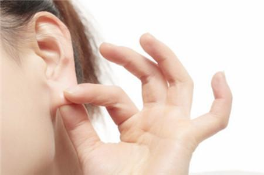

你是不是有这样的困惑，油耳屎一定有腋臭吗?腋臭患者是不是都是油耳屎?腋臭与油耳屎之间到底有什么联系那?狐臭专家表示：有油耳屎一般都有腋臭，但有腋臭，不一定都是油耳屎。
油耳屎产生原因：
油耳屎是基因决定的，有的人耵聍腺和皮脂腺分泌特多，排出的呈棕黄色、油性粘稠物质，在尚未干燥后就已积满在外道眼里，有的甚至流出耳外，有的凝聚成团，这些统称为软耳屎，俗称“油耳”，很多朋友认为有腋臭，耳屎都是稀的，这个观点是错误的。有油耳屎一般都有腋臭，但有腋臭，不一定都是油耳屎。
油耳屎与腋臭：
油耳屎一般都有腋臭，但并不是绝对的，是不是腋臭需要进一步的诊断，腋臭是由于腋下的一种特殊汗腺，称为顶浆腺，过度发达造成的。青年男女体表腺体分泌物较其他人群高，尤其是油性皮肤者，身体上腋臭的异味比一般人要强烈得多。

耳垢干湿是有人体基因决定的。受基因变异影响，多数东亚人的耳垢是干的，欧洲及非洲人的耳垢多是湿的。耳垢干湿本无伤大雅，垢干湿取决于ABCC11基因，若这基因出现突变，就会改变细胞管道的结构，影响耳垢的干湿。
有腋臭的一定有油耳，但油耳朵不一定就是有腋臭，那么要如何鉴别自己是否患了腋臭呢?怎样鉴别腋臭?
1.首先要考虑到患者是否有腋臭家族史。腋臭有一定的家族遗传性，如果自己的家人有患过腋臭的，自己换腋臭的可能性也会很大。这种遗传性虽然并没有性别差异，但是临床上女性患者要多于男性。
2.还可以从患者身上的气味来进行诊断。难闻的气味是腋臭最典型的特点，因此可以在患者运动过后，拿一块干净的布在腋下擦拭一下，闻闻是否有异味，如果有的话，很可能患有腋臭。而过多的出汗还会把患者腋下部位的衣服染黄，给患者造成清洁上的困扰。
3.腋臭的鉴别也可以从患者的耳朵着手。临床上，腋臭患者都会有油耳朵现象，他们的耳屎会很粘稠，症状较轻的呈粉末状。但并不是有油耳朵现象就是患有腋臭，这只是诊断腋臭的一种方法。
4.腋臭的鉴别还可以观察患者的腋下是否有异常的油腻物，是否出现毛发霉变分泌物粘连的症状。